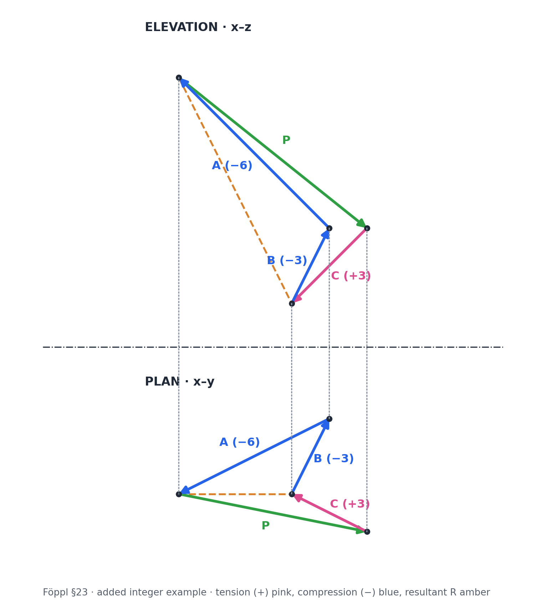

Construct the planes
n_ab = a × b
n_cP = c × PUnit bar directions point away from the joint. Cross products define the two auxiliary planes.
Books / August Föppl · The Space Truss
August Föppl · 1892 · §23
Three non-coplanar bars meet one force. Two auxiliary planes locate the resultants; a skew force quadrilateral closes the equilibrium.
Four slides · geometry from the Python example
Use the buttons or left / right arrows to change slides. Right-drag to orbit and use the wheel to zoom. Phones use a portrait deck. Open full screen.
Part I, Chapter 5, §23 · pp. 34–36


The construction begins on printed p. 35; both figures appear on p. 36. Föppl supplies geometry and construction rules, not unique numerical dimensions. The coordinates and forces in the interactive example are new.
NumPy + COMPAS
n_ab = a × b
n_cP = c × PUnit bar directions point away from the joint. Cross products define the two auxiliary planes.
d = n_ab × n_cPThe resultants of A,B and of C,P must both lie on this line.
numpy.linalg.solve([a b c], -P)Solve signed forces, assemble P,C,B,A, and check equilibrium and polygon closure. Tension is positive.

2.22 × 10⁻¹⁶.0.78590525; condition number: 2.04586681.6.94 × 10⁻¹⁷.Method boundary. This is a determinate spatial bar-joint reconstruction, not compression-only form finding or Thrust Network Analysis. It does not include bending stiffness, masonry envelopes, reciprocal grids, or optimization.